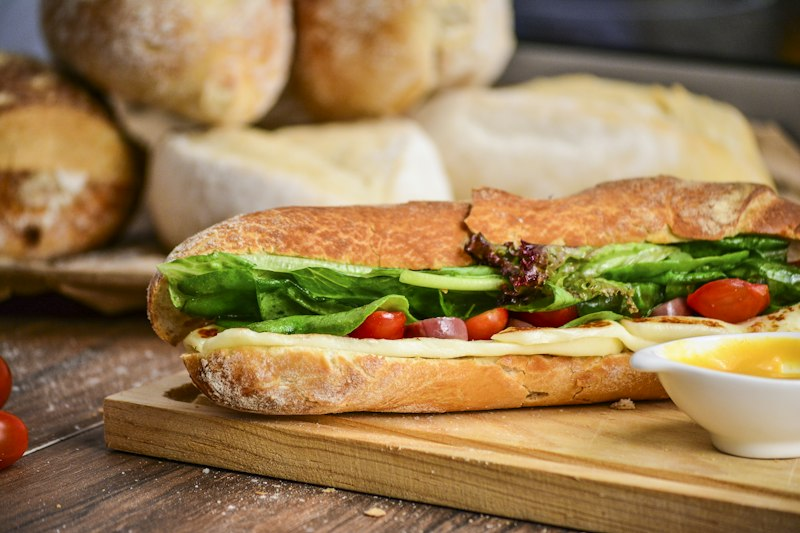

Prep Time10 min
Cook Time5 min
Servings2 people
Caprese Sandwich
Fresh Italian sandwich with mozzarella, tomato, and basil
Extended Preparation TimeThis recipe requires more than 45 minutes to prepare. Plan accordingly!
- 11 ciabatta bread
- 2200g fresh mozzarella, sliced
- 32 large tomatoes, sliced
- 4Fresh basil leaves
- 53 tablespoons pesto
- 62 tablespoons balsamic glaze
- 7Olive oil
- 8Salt and pepper